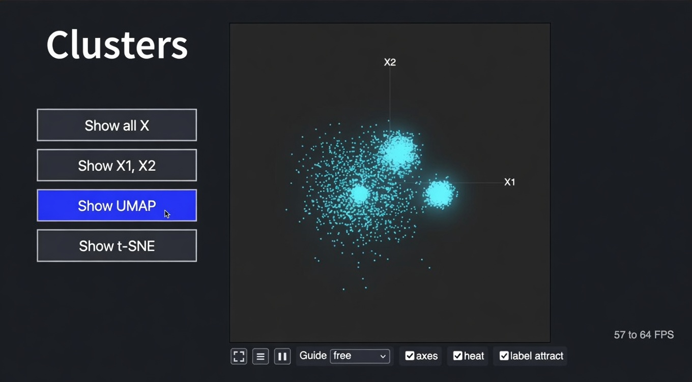

Here is a visual intuition for ORI
This graph shows 3 centers of power, and a 4th one.

The "backtier" has visibility into the frontier(s) that it cannot have of itself. This is extremely useful for both, IF frontier & backtier find a way to tolerate each other.
May 11th, 2026
ORI is no longer accepting new members
May 4th, 2026